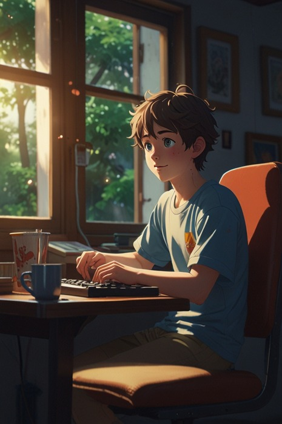

Фритрек и нулевой спринт: Подготовка к работе

Это было самое начало пути. На этом этапе важно было проникнуться основами и настроиться на учёбу. И, возможно, подумать, как новые знания могут повлиять на ваше будущее.
"Вау!" - первая реакция после бесплатного курса. Почувствовал в себе творческую искру. И вот проснулось это детское любопытство: "А что там дальше за поворотом?" Погнали!